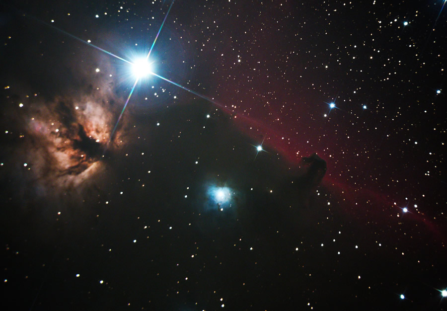

IC434 La Tête de Cheval (Photo Gérard NONNEZ le 18/11/2017)
La communauté de l'Astronomie Libre des Pyrénées a été créée en 2017. Elle a pour rôle de regrouper ses membres autour de deux thèmes principaux celui de l'observation et de la photographie planétaire ou stellaire. Ce site a pour vocation de présenter les outils et techniques pour mener à bien une campagne d'observation ou de photos. Il présente également les travaux de chacun de ses membres et la vie de la communauté. Des tutoriels d'apprentissage de ces disciplines comme : la mise en station, le répèrage des objets célestes, la mise en place de configurations d'astrophotographie, les calculs associées et les techniques d'acquisition et de traitement des images et vidéos sont énoncés dans les différentes rubrique du site.